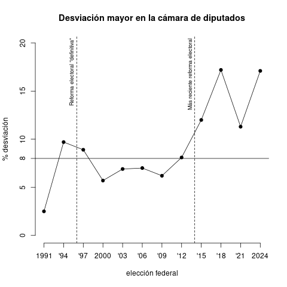

En 10 años nos convirtimos en un sistema marcadamente desproporcional.
La función primordial del sistema electoral es la conversión de votos en escaños legislativos. Y esta conversión figura en primer plano de los estudios electorales.1 La victoria avasalladora de Morena y sus aliados en la elección general de 2024 coloca, de nueva cuenta, este tema sobre la mesa del debate público.
Entre las aspiraciones democráticas está la proporcionalidad de la representación partidista. El anhelo es que, cuando el premio a repartir es divisible, los partidos reciban partes más o menos proporcionales a la fracción del voto popular que cada uno recibió.
En el caso de la presidencia, que es un cargo indivisible, el premio íntegro le corresponde al partido más votado. Pero las asambleas, que en tanto cuerpos colegiados son también divisibles, posibilitan que el partido que obtuvo 20 por ciento del voto nacional obtenga alrededor de 20 por ciento de los escaños legislativos totales.
Las fórmulas de representación proporcional (RP) surgieron como reacción a la subrepresentación sistemática de los partidos chicos en el sistema de distritos de mayoría (Boix 1999). Por muchas razones, ninguna de estas fórmulas alcanza la proporcionalidad perfecta, pero todas las fórmulas de RP buscan concientemente atajar un aspecto de la desproporcionalidad (Gallagher 1991).
México tiene un sistema mixto con miras a mitigar la desproporcionalidad en la representación partidista de la cámara de diputados. ¿Qué tan bien ha cumplido esta meta desde que el PRI perdiera su condición hegemónica?
Un partido está sobrerrepresentado en el sentido que obtiene un porcentaje de escaños mayor al porcentaje del voto nacional que obtuvo. La subrepresentación es el fenómeno inverso. Por estar fijo el número de escaños a repartir, la sobrerrepresentación de uno o algunos conlleva necesariamente la subrepresentación de otros.
Hay múltiples aproximaciones para medir la desproporcionalidad. Lo hacen a partir de la distorsión o diferencia del porcentaje de escaños y el porcentaje de votos a nivel nacional que recibió cada partido. Adoptaré el índice de desproporcionalidad Lijphart (1994), por intuitivo y sin aritmética compleja.
Su índice de desproporcionalidad D para una elección es, simplemente, la distorsión mayor en valor absoluto que se observó entre los diversos partidos que contendieron. Lijphart resume la desproporcionalidad del sistema a través del partido que recibió el premio o castigo más grande en su representación. Por ejemplo, en una elección entre tres partidos, si dos de ellos obtuvieron sobrerrepresentación de 10 por ciento cada uno y el tercero sufrió subrepresentación de 20 por ciento, \(D = |-20\%| = 20\%\). Una \(D=0\) indicaría proporcionalidad perfecta.
Antes de mostrar la serie histórica es imperativo elaborar la presencia de coaliciones electorales. El INE reporta votos de cada partido detrás de una candidatura común por separado y permitiría usar el voto de cada partido coaligado, en lo individual, para obtener los índices de desproporcionalidad. Así no debe hacerse, so pena de tergiversar con la estadística aquello por lo que votó la ciudadanía.
En aras de mejorar la probabilidad de ganar una mayoría conjunta, quienes integran una coalición pre-electoral se comprometen a apoyarse mutuamente y coordinarse en la campaña. Y, tácita o explícitamente, a gobernar juntos pasada la elección. Ese es el sentido de su oferta de campaña por ganar el voto ciudadano. Sentido encarnado, ultimadamente, en una candidatura común.2
Por esto, lo correcto es contabilizar los votos y escaños conjuntos de cada coalición pre-electoral en la medición de la desproporcionalidad.
El cuadro y diagrama reportan la desproporcionalidad de las elecciones de diputados federales desde 1991. El promedio alcanza 9.4 puntos de desproporcionalidad en doce elecciones federales, con una mínima de 2.5 en 1991, y máximas que superan los 17 puntos en 2018 y 2024, ambas en favor de la coalición electoral de Morena.
| A | B | C |
|---|---|---|
| Año | Desviación mayor | Principal afectado |
| 1991 | 2.5% | + PRI |
| 1994 | 9.7% | + PRI |
| 1997 | 8.9% | + PRI |
| 2000 | 5.7% | – PRD-PT-CD-PAS-PSN |
| 2003 | 6.9% | + PRI-PVEM |
| 2006 | 7.0% | + PAN |
| 2009 | 6.2% | + PRI-PVEM |
| 2012 | 8.1% | + PRI-PVEM |
| 2015 | 12.0% | + PRI-PVEM |
| 2018 | 17.2% | + MORENA-PT-PES |
| 2021 | 11.3% | + MORENA-PVEM-PT |
| 2024 | 17.1% | + MORENA-PVEM-PT |
| Media 1991–2024 | 9.4% | |
| Media 2015–2024 | 14.4% |

La tendencia al alza es patente en el diagrama. Varias reformas electorales en el periodo cambiaron aspectos de la fórmula de RP que inciden en la desproporcionalidad. Destaco dos de ellas: la de 1996, que plasmó en la constitución un techo de sobrerrepresentación de 8 puntos porcentuales, y la de 2014, que cambió la ley para que dicho techo aplicara a los partidos y no a sus coaliciones — a contracorriente de mi argumento de la sección anterior y, posiblemente, de la propia constitución —. Antes de 2014, la desproporcionalidad media era 6.9%. Desde entonces se duplicó, alcanzando 14.4 puntos. Cantidad que no está lejos del promedio de 17.6 puntos del Reino Unido en décadas recientes, país que tiene un sistema sin RP.
El diagrama también destaca el techo constitucional de 8 por ciento de sobrerrepresentación. La reforma de 1996 mantuvo a raya la desproporcionalidad, casi siempre por debajo de este límite. La de 2014, en cambio, anuló este límite para las coaliciones ganadoras. De llevarse a cabo un reparto de diputados similar al que uso en esta nota (propuesto la semana pasada por SEGOB), seguramente los magistrados electorales tendrán que decidir fallar acerca de la constitucionalidad de tanta desproporcionalidad.
Boix, C. (1999). Setting the Rules of the Game: The Choice of Electoral Systems in Advanced Democracies. American Political Science Review 93 pp. 609–24.
Gallagher, M. (1991). Proportionality, Disproportionality, and Electoral Systems. Electoral Studies 10(1):33–51.
Lijphart, A. (1994). Electoral Systems and Party Systems: A Study of Twenty-Seven Democracies, 1945–1990. Oxford University Press.
Magar, E., A. Trelles, M. Altman y M. McDonald (2016). Components of Partisan Bias Originating from Single-Member Districts in Multi-Party Systems: An Application to Mexico. Political Geography 57 pp. 1–12.
Molinar Horcasitas, J. y J. Weldon (2001). Reforming Electoral Systems in Mexico, en Mixed-Member Electoral Systems: the Best of Both Worlds? coordinado por M. Shugart y M. Wattenberg, pp. 209–30. Oxford University Press.
Taagepera, R. (1973). Seats and Votes: A generalization of the cube law of elections. Social Science Research 2 pp. 257–75.
Taagepera, R. y M.S. Shugart (1989). Seats and Votes: The Effects and Determinants of Electoral Systems. Yale University Press.
Tufte, E. (1973). The relationship between seats and votes in two-party systems. American Political Science Review 67 pp. 540–54
Vea, entre otros, Lijphart 1994, Magar et al. 2017, Molinar y Weldon 2004, Taagepera y Shugart 1989, y Tufte 1973.
Aunado a lo anterior está el dinámico transfuguismo de diputados entre las bancadas de Morena, PT, PVEM y PES en las Legislaturas LXIV y LXV; y del PRI y PVEM (los diputados "sandía", verdes por fuera pero rojos por dentro) entre las LIX y LXIII.